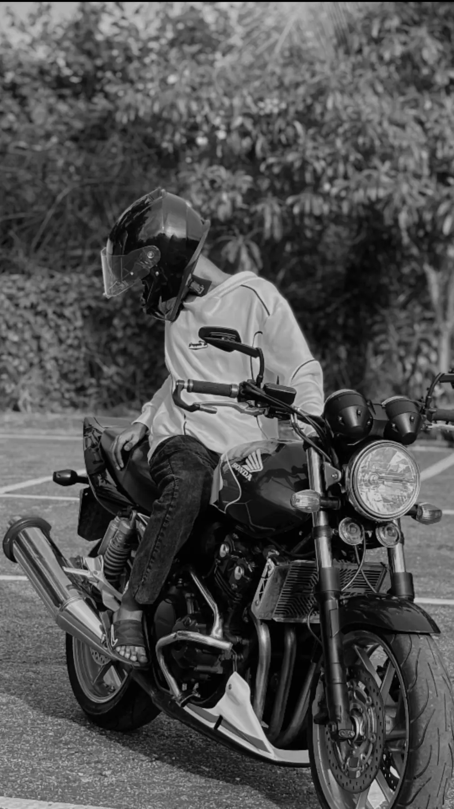
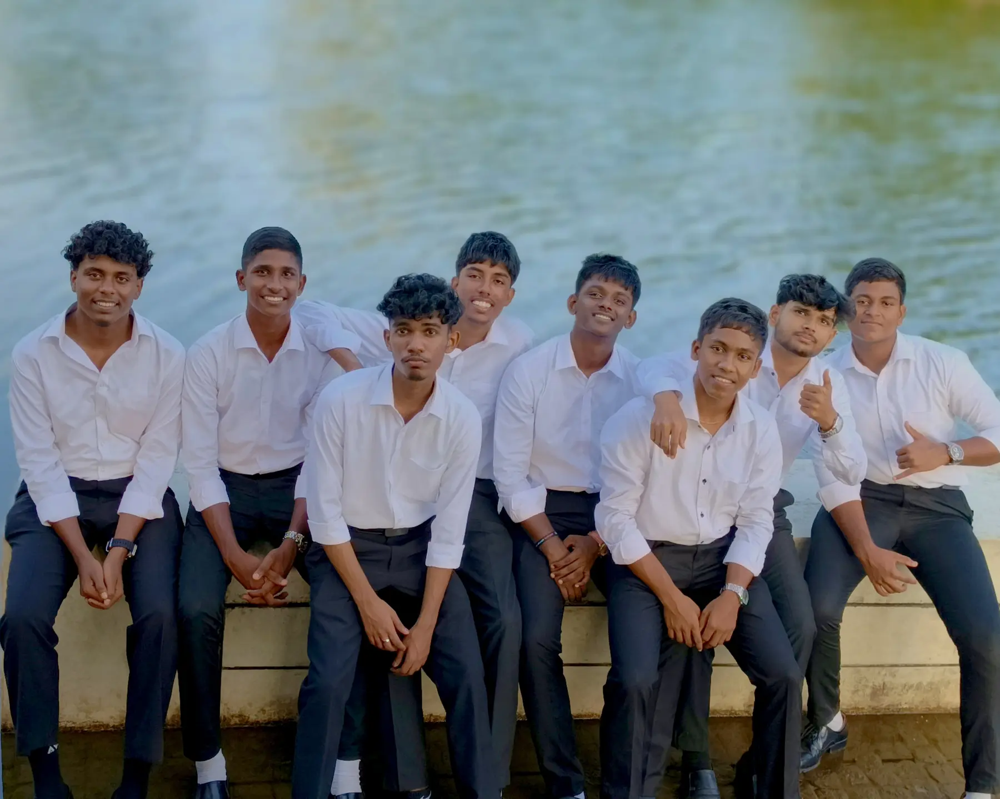
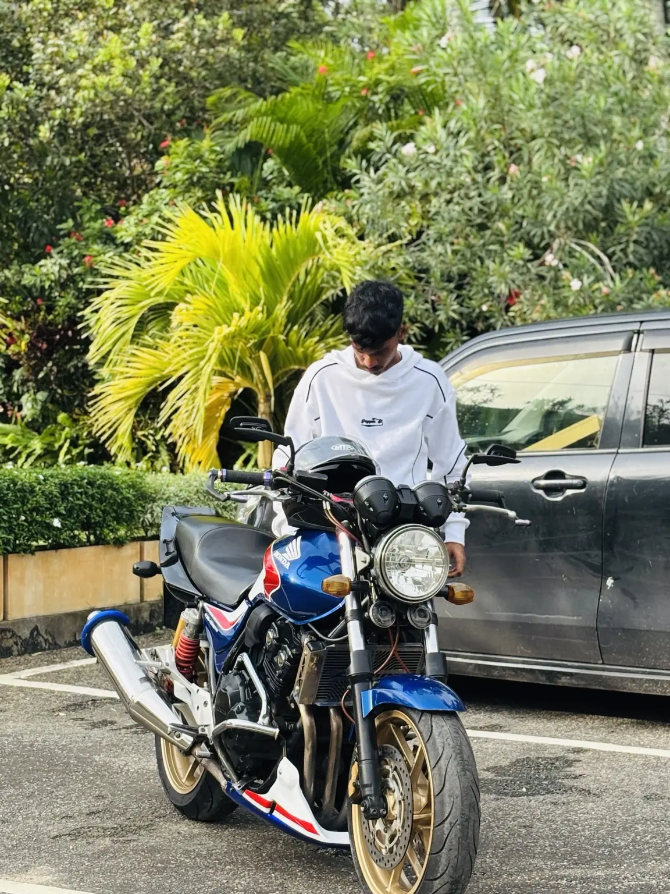
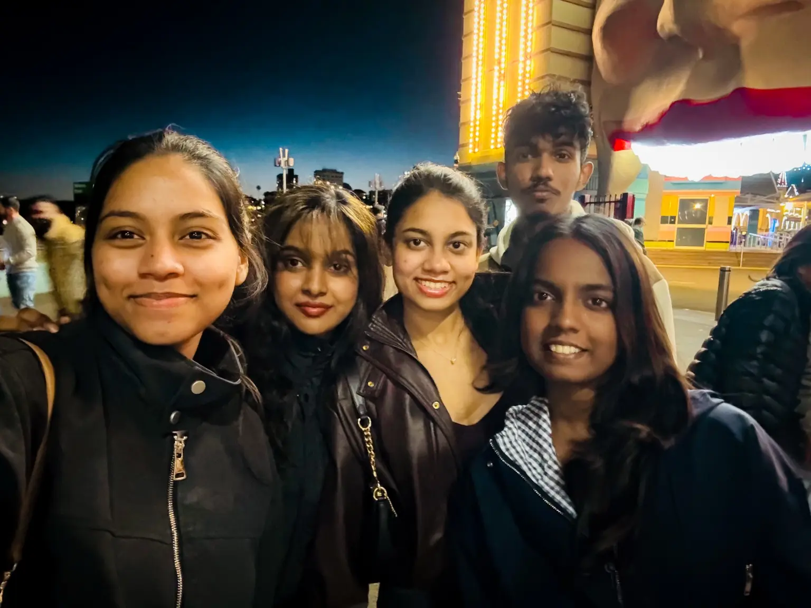
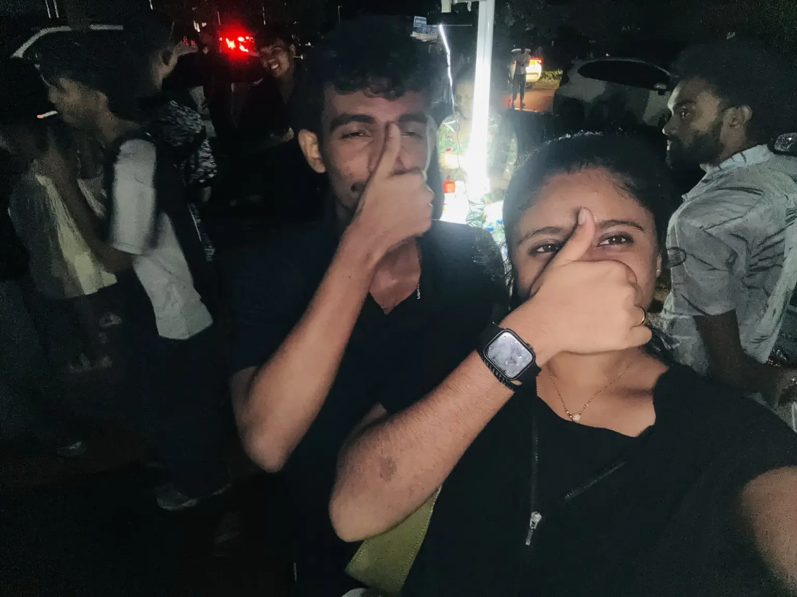

About me
More than
just code.

I believe strong technology professionals combine technical thinking with curiosity, empathy and clear communication.
I'm a Cyber Security student in Sydney, originally from Sri Lanka. Moving countries and changing direction into technology taught me to adapt quickly, stay open-minded and keep moving forward.
01 / MY DIRECTION
My ambition is
simple.
I want to build a career protecting the systems people and organisations depend on. I aim to develop deeper skills in threat analysis, network security and secure digital infrastructure.
My long-term goal is to become a cyber security professional who can understand complex risks and communicate solutions clearly.
02 / LIFE OUTSIDE STUDY
People, places
& motion.
Technology is one part of who I am. Friends, new experiences and motorcycles keep the rest of life interesting.



